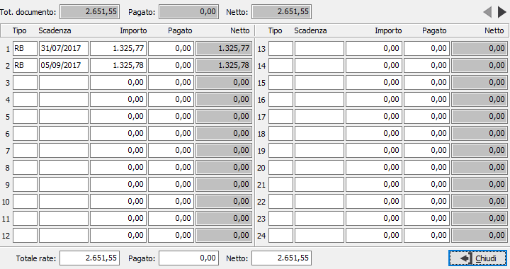

Dettaglio scadenze da documenti
 Sulle varie gestioni documenti, nella pagina del riepilogo totali, è stato aggiunto un pulsante che consente di accedere alla finestra di dettaglio scadenze; da questa finestra è possibile visualizzare tutte le rate inserite fino ad un massimo di 72 rate su tre pagine che si scorrono con gli appositi pulsanti; sono anche visualizzati il totale documento, l'eventuale totale pagato e l'importo netto sia del documento (in alto), che risultanti dal computo dei dati contenuti nella finestra stessa (in basso).
Sulle varie gestioni documenti, nella pagina del riepilogo totali, è stato aggiunto un pulsante che consente di accedere alla finestra di dettaglio scadenze; da questa finestra è possibile visualizzare tutte le rate inserite fino ad un massimo di 72 rate su tre pagine che si scorrono con gli appositi pulsanti; sono anche visualizzati il totale documento, l'eventuale totale pagato e l'importo netto sia del documento (in alto), che risultanti dal computo dei dati contenuti nella finestra stessa (in basso).
Nel caso sia stato inserito un acconto sul documento, questo sarà riportato ripartito in base al criterio esposto in configurazione partite aperte e sarà modificabile da parte dell'utente; se gestite le scadenze variabili saranno modificabili anche i campi Tipo, Scadenze e Importo rata.
Non sarà possibile effettuare nessuna modifica se non si è in modifica del documento stesso.

All'uscita dalla finestra, in caso di modifica, sarà effettuato un controllo di coerenza dei totali rate, pagato e netto risultanti dalle scadenze con i totali del documento; eventuali importi non allineati saranno visualizzati in rosso nella parte relativa ai totali della finestra (in basso).